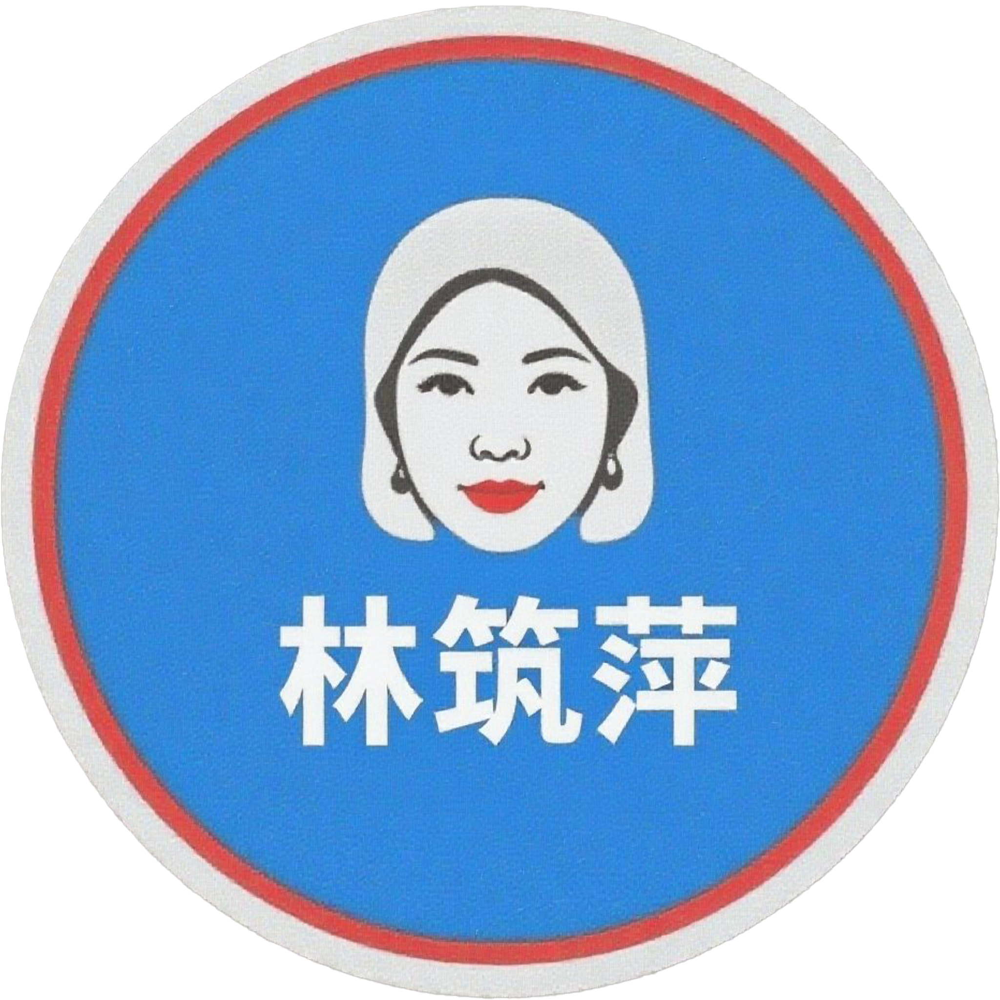

贵阳市中级人民法院
2025-07-09
刑事拘留通知书和逮捕通知书一直未送达家属，经多次交涉未果，家属签署确认未收到相关通知书的文件并存证。
贵阳市公安局云岩分局
2024-12-31 21:23
贵阳市公安局云岩分局胡督察电话回访，仍未解决刑拘、逮捕通知书送达及随身物品争议等实质问题。
贵阳市中级人民法院
2024-12-25 09:30
贵阳市中级人民法院林筑萍法官第三次电话答复：案号更正为669号，补正裁定已送达，案号错误属文书瑕疵，不影响判决实体内容。
贵阳市公安局云岩分局
2024-12-18 16:20
贵阳市公安局云岩分局胡督察接待，接收健康档案、判决书、裁定书、报案回执等材料，承诺30日内书面回复刑讯逼供、通知书送达、物品登记争议。
毓秀路派出所
2024-12-16 15:55
毓秀路派出所出具《报案回执》，载明2019年1月20日晚报案被殴打，因监控保存期限已过无法查证，报案人联系方式被篡改。
云岩区检察院
2024-12-12 10:39
云岩区检察院周江红检察官电话答复：退侦无需告知嫌疑人，卷宗已全部移送法院，健康档案无暴力执法线索，建议申诉或信访。
贵阳市中级人民法院督察室
2024-12-12 09:30
贵阳市中级人民法院督察室电话回访，承认二审裁定书案号笔误，已送达补正裁定书（落款2024年11月8日），可凭新证据申请再审。
医院
2024-11-29
收到医院寄来的住院证明。
一审档案室
2024-11-28
一审档案室称关键卷宗材料缺失属公安局拒绝提供。
贵阳市中级人民法院林筑萍
2024-11-14
收到中院林筑萍寄来的补正裁定书（2019）黔01刑终669号，落款2024年11月8日，内容与附卷不一致，未载明裁定依据。
贵阳市中级人民法院
2019-08-26
贵阳市中级人民法院作出（2019）黔01刑终667号刑事裁定书（后补正为669号），维持原判，未及时送达。
2024年11月-12月王贵平案件核查（案号/卷宗/执法问题）及交涉记录
（核心时段：2024.11.04-2024.12.31）
事实：
1. 2024年11月4日：王贵平到贵阳市中级人民法院档案室核查卷宗，首次发现自身案件二审案号（2019）黔01刑终667号存在问题——档案室工作人员告知“667号非王贵平案件，实际应为669号”，且667号在中国裁判文书网对应他人职务侵占案；王贵平申请复制卷宗被拒，现场录制音频、图片记录过程（含工作人员确认案号错误的对话）。
2. 2024年11月7日-12月25日（3次通话）：①11月7日首次致电中院林筑萍法官，反映案号问题被要求“按程序申诉”；②11月8日林筑萍确认案号有误，通知当日14:30到中院D205领取补正裁定（仅更正案号，称“不影响案件事实”），同时拒绝王贵平个人查卷申请，称“需委托律师”；③12月25日王贵平追问补正裁定的法律依据，林筑萍仅答复“最高法院文书规定”，未提供具体发文编号，且拒绝提供2019年8月26日作出的669号裁定书原件。
3. 2024年11月13日-12月16日（派出所交涉）：①11月13日到毓秀路派出所反映“无抢劫手机证据、岗亭监控缺失”，民警称“判都判了，找法院或申请最高法复核”，否认王贵平“未拿手机”的陈述；②12月16日再次到该派出所，反映2019年1月20日晚被民警在无监控区域持械暴力致伤（双手背肿胀、右眼部/后背损伤），民警记录情况但未实质核查，仅要求王贵平签字确认笔录（王贵平提出“应为讯问而非询问”的异议）。
4. 2024年11月28日：王贵平到贵阳市云岩区法院档案室，申请查阅被告人供述、被害人陈述、证人证言等公安卷材料，被管理员告知“个人不可查公安卷，仅可查法院诉讼卷”，即使出示《最高人民法院办公厅规定》，仍被要求“必须委托律师查阅”；此前已拷贝的诉讼卷中无公安卷关键内容。
5. 2024年12月12日（2次回访）：①中院督察室回访，承认“667号为书记员失误（已辞职），系统实际案号669号”，致歉后建议“走申诉程序”，未解释“2019年同日作出2份裁定却未及时更正”的原因；②云岩区检察院周江红致电，否认“未送达起诉书”责任（称“检察院仅负责起诉，送达是法院职责”），主张“退侦无需告知当事人”，且无法解释起诉书无防伪条形码、未在12309平台公开的问题。
6. 2024年12月18日-31日（贵阳公安局交涉）：①12月18日到贵阳市公安局找胡阳督察反映3个核心问题：刑讯逼供、未送达拘留/逮捕通知书、随身物品登记不全；胡督察称“拘留通知书通过挂号信寄往龙里（王贵平户籍地），有邮戳记录”，但王贵平父亲未收到，且“监控仅存6个月，无法核查2019年刑讯情况”，随身物品台账仅登记“1张工商银行卡”（王贵平否认，称有其他物品未登记）；②12月31日胡督察电话回访，确认“挂号信已寄出但无签收记录”，建议“到派出所补打通知书”，仍未核查刑讯逼供问题。
证据：
① 2024年11月4日中院档案室记录（佐证案号错误、拒复制卷宗）：
音频：20241104_143533.M4a（SHA256：183447649898047B78FDF47688BC48C0A8D366307E323C453970E9A0F4641AF6）、20241104_151320.M4a（SHA256：A5E828BE5E0E004B1FC9823797905369B0AE8232C51B7C944837D6AA6B8CB1D9）、20241104_152908.M4a（SHA256：8ECE1E18E2B200F26397CBAA403B81D2EE26BDCFA7190226771D4BBC71655B78）；
图片：IMG_20241104_151535.jpg、IMG_20241104_151617.jpg等10张（含档案室场景、裁定书细节）；
② 2024年11月7日-12月25日与林筑萍通话记录（佐证案号更正、拒查卷）：
音频：林筑萍法官@0851 8536 4238_20241107085454.m4a（SHA256：2EB85E34CDA6687D1BCEFD70A066EDE7C8FBAD5211F1080CA7E2C98A7E935EAF）、林筑萍法官@0851 8536 4238_20241225093037.m4a（SHA256：EA548124048342FC70D9A9308F89D27DE173F540E9A15F1900B18132DC4BFCA5）；
③ 2024年11月13日-12月16日派出所记录（佐证执法问题反馈）：
音频：20241113_160615.M4a（SHA256：25F0FF827D7E7277443EE60E24DF1E17E71C18A4D580023FC0203DF66EE202B3）、20241216_113734.m4a（SHA256：F8C8B236C4579991AE3E20DF88DE98BB35FCF60A9683B5113BFA6A6877205C9B）；
④ 2024年11月28日一审档案室记录（佐证拒查公安卷）：
音频：20241128_102914.m4a（SHA256：3AA2BB46250E0BE2A363A026C7DA044449A81853F203CF8A909DC9DAC5923B39）、20241128_113308.m4a（SHA256：71AC88BB005770164FCCBFAE72796BEAF28EF30C36599202FA7240ACC520F609）；
⑤ 2024年12月12日-31日公检法回访记录（佐证问题答复）：
音频：0851 8536 4032_20241212093049.m4a（中院督察室，SHA256：46324B7203693AC141228B2FEF271E89227D5E8CC4EE91B777704D6192797811）、检察员周江红@0851 8669 7155_20241212101853.m4a（SHA256：45D0C559C70A8A866D268F6351B9E54E1932D0A60CE1A4EC11F2C40F34DD009D）、0851 8682 2261_20241231212357_笔记.docx（贵阳公安局胡督察）；
⑥ 辅助证据：中国裁判文书网（2019）黔01刑终667号裁定书截图（对应他人职务侵占案）、王贵平2019年入所健康档案（记载双手背/眼部/后背损伤，佐证刑讯逼供）。
诉求：1. 请求法院依法调取2024年11月4日中院档案室的完整监控及录音，核查案号错误的成因（为何2019年同日作出2份裁定却未更正），要求林筑萍法官提供补正裁定对应的《最高法院文书规定》原文（含发文编号），并交付2019年8月26日669号裁定书原件；2. 责令毓秀路派出所限期核查2019年1月20日暴力执法事实，调取当年办案区人员进出记录（若存在），并对“无手机证据却认定抢劫”的侦查行为合法性进行审查；3. 要求贵阳市云岩区法院、中院依据《档案法》纠正“个人不可查卷宗”的违规要求，允许王贵平查阅公安卷（被告人供述、被害人陈述等），或出具书面拒绝理由；4. 责令贵阳市公安局胡督察部门重新核查拘留/逮捕通知书的送达情况（提供挂号信签收凭证），若无法提供则确认“未依法通知家属”的行为违法，同时对2019年刑讯逼供问题启动专项调查（调取入所健康档案对应的医疗机构记录）；5. 要求云岩区检察院解释起诉书无防伪条形码、未公开的原因，提供2019年案件退侦的书面材料（佐证“退侦未告知”的程序合法性）。
 2023年6月10日王贵平旧伤存续事实
（记录时间：2023.06.10）
2023年6月10日王贵平旧伤存续事实
（记录时间：2023.06.10）
事实：2023年6月10日，王贵平已刑满释放（2023年1月20日释放）近5个月，但其身体上因2019年1月20日被毓秀路派出所民警持械暴力致伤的旧伤仍未愈合，具体为双手背肿胀、右眼部及后背软组织损伤的症状持续存在，当日拍摄照片记录了旧伤存续状态。
证据：
① 王贵平旧伤现场照片：
IMG_20230610_215406.jpg、IMG_20230610_215417.jpg（直接佐证2023年6月10日王贵平旧伤仍存续的事实，与2019年1月20日暴力执法致伤情况形成时间线关联）；
② 2019年1月20日暴力执法相关事实记录（此前第8项事实，佐证旧伤的成因系公安民警违法暴力行为）。
诉求：1. 请求法院将2023年6月10日旧伤照片与2019年1月20日暴力执法事实进行关联性核查，确认旧伤系当年暴力执法直接导致，进一步认定公安民警违法履职的事实；2. 要求相关机关调取王贵平服刑期间及释放后的医疗记录（如有），补充佐证旧伤持续时间及恢复情况；3. 基于旧伤与违法执法的直接关联，请求法院在后续申诉、再审程序中，将该旧伤证据作为认定原案件侦查程序违法的重要依据，同时为后续可能的国家赔偿申请留存事实基础。
2020年1月-2023年1月王贵平服刑及刑满释放事实
（核心时间：2020.01.07/2023.01.20）
事实：
1. 2020年1月7日（第21项事实）：王贵平从原服刑场所被转至北斗山监狱继续服刑；在服刑期间，因王贵平始终坚持不认罪（对此前案件中的抢劫指控及判决结果持有异议），最终未获得减刑机会，相关服刑表现及减刑审核情况由北斗山监狱记录在案。
2. 2023年1月20日（第22项事实）：王贵平服刑期满，依法从北斗山监狱刑满释放，重获人身自由；释放时，监狱向其出具了正式释放证明，编号为（2023）北监释第50号，该证明为其刑满释放的法定凭证。
证据：
① 北斗山监狱服刑记录（由北斗山监狱留存，含王贵平转监时间、服刑期间表现、减刑审核结果等内容，可佐证转监事实及未获减刑原因）；
② 释放证明（编号：（2023）北监释第50号）：
IMG_20250815_075720.jpg（直接佐证2023年1月20日王贵平刑满释放的事实，为法定释放凭证）。
诉求：1. 请求法院依法调取北斗山监狱留存的王贵平服刑记录，核查其“因不认罪未获减刑”的具体审核流程及依据，确认该减刑审核结果与此前案件程序违法、事实认定错误之间的关联；2. 请求法院确认（2023）北监释第50号释放证明的法律效力，将其作为王贵平已服完原判决刑期的法定依据；3. 基于王贵平刑满释放后仍持续主张案件事实错误的情况，要求法院保障其后续申诉、申请再审的合法权利，依法受理其针对原案件程序违法、事实认定错误的申诉材料。
2019年8月-10月二审裁定及刑期执行问题
（核心时间：2019.08.26/10.14）
事实：
1. 2019年8月26日（第19项事实）：贵阳市中级人民法院直接在看守所向王贵平送达二审裁定书，即（2019）黔01刑终667号刑事裁定书；经核查，该裁定书的案号在中国裁判文书网公开公开的对应文书为其他人的职务侵占案件，与王贵平案件无任何关联；且一审附卷的该刑事裁定书与王贵平2019年8月26日收到的裁定书内容一致，均为（2019）黔01刑终667号。
2. 2019年10月14日（第20项事实）：王贵平被押送监狱监狱执行刑罚，但在押送途中核对刑期时，负责核对的警务人员所持单据上显示王贵平的刑期为11年有期徒刑，与一审判决书确定的4年有期徒刑严重不符；因王贵平随身携带并判决书作为凭证，及时避免了错误执行的后果。
证据：
① 在中院拍摄的宣判笔录：
IMG_20241104_152123.jpg、IMG_20241104_152146.jpg（佐证2019年8月26日送达二审裁定书的事实）；
② 一审附卷的刑事裁定书及王贵平收到的裁定书：
005300-刑事裁定书.jpg、005400-刑事裁定书.jpg、005500-刑事裁定书.jpg（佐证两份文书均为（2019）黔01刑终667号且内容一致的事实）；
③ 王贵平持有的的一审判决书（佐证判决确定的刑期为4年有期徒刑，与押送时单据记载的11年不符）；
④ 中国裁判文书网查询的（2019）黔01刑终667号裁定书截图（公开信息显示为他人人职务侵占案件，佐证案号关联错误）。
诉求：1. 请求法院核查（2019）黔01刑终667号刑事裁定书的合法性性，确认该裁定案号与王贵平案件无关的事实，依法撤销错误案号的裁定书，重新作出与案件匹配的二审法律文书；2. 要求相关机关对2019年10月14日押送送监狱时出现的“刑期记载错误”进行调查，查明错误原因，追究相关人员责任；3. 责令监狱管理机关以一审判决书确定的4年有期徒刑为依据，纠正王贵平的刑期执行情况进行重新核对，纠正错误记录，保障刑罚执行的准确性。
2019年4月-8月案件提讯、文书送达、庭审及一审判决签收事实
（核心时间：2019.04.03/06.14/07.02/08.01）
事实：
1. 2019年4月3日（第13项事实）：检察院对王贵平进行第二次提讯，王贵平明确陈述“仅存在打人行为，无抢劫行为”，办案人员注明“王贵平无抢劫表述”后，王贵平才签署提讯相关文书；此后数月，案件无任何进展通知，王贵平未收到关于案件延期、退侦等任何信息，且该次提讯的文书未附入案件正卷。
2. 2019年6月14日（第14项事实）：法院书记员马晓捷一次性向王贵平送达换押证、量刑建议书、起诉书三份文书；因王贵平此前未收到任何案件进展信息（包括是否存在延期审查、退回补充侦查等情况），且文书送达时间明显超出法定时限，王贵平当场拒签、拒收该三份文书。
3. 2019年7月2日（第15项事实）：王贵平在未收到起诉书的情况下，被押送至贵阳市云岩区人民法院应诉；庭审中仅出示并播放一段案发监控视频，视频画面全程无任何手机出现；王贵平当庭向法庭确认“未收到起诉书”的情况；庭审结束后，法官宣告“择日宣判”，但此后长期未出具宣判结果，且该庭审视频未在裁判文书网公开；2024年11月5日，王贵平在该院档案室复制卷宗材料时发现：①庭审笔录存在虚构内容，虚假记录“王贵平于庭审10日前收到起诉书”；②附卷的一审判决书与王贵平2019年8月1日实际收到的判决书内容一致，均出现“王UI平”的异常字符（姓名录入错误）。
4. 2019年8月1日（第16项事实）：当日中午，王贵平在看守所内签收一审判决书，签收过程中明确向办案人员表示“对判决结果不服，将依法提起上诉”，相关签收情况记录于宣判笔录及送达回证中。
证据：
① 2019年4月3日检察院第二次提讯文书（未附正卷，佐证提讯内容及文书缺失事实）；
② 起诉书送达笔录：
000900-送达起诉书副本笔录.jpg、001000-送达起诉书副本笔录.jpg、001100-送达起诉书副本笔录.jpg（佐证2019年6月14日文书送达及王贵平拒签拒收事实）；
③ 刑事庭审笔录：
001800-刑事庭审笔录.jpg、001900-刑事庭审笔录.jpg、002000-刑事庭审笔录.jpg、002100-刑事庭审笔录.jpg、002200-刑事庭审笔录.jpg、002300-刑事庭审笔录.jpg（佐证庭审中虚构“收到起诉书”记录的事实）；
④ 宣判笔录及送达回证：
004600-宣判笔录及送达回证.jpg、004700-宣判笔录及送达回证.jpg、004800-宣判笔录及送达回证.jpg、004900-宣判笔录及送达回证.jpg（佐证2019年8月1日王贵平在看守所签收一审判决书及明确表示上诉的事实）；
⑤ 一审判决书（附卷版本及王贵平2019年8月1日收到版本，均含“王UI平”异常字符，佐证文书录入错误及内容一致性事实）；
⑥ 庭审监控视频（未公开，佐证“无手机画面”及视频未依法公开事实）。
诉求：1. 请求法院依法调取2019年4月3日检察院第二次提讯的完整文书，确认王贵平“无抢劫行为”的陈述真实性，追究文书未附正卷的程序责任；2. 请求法院核查2019年6月14日文书送达的法定时限合规性，确认王贵平拒签拒收的合理性，否定该违规送达行为的法律效力；3. 请求法院查明庭审笔录中“虚构收到起诉书”的事实，认定该虚假记录无效；4. 责令贵阳市云岩区人民法院公开2019年7月2日的庭审视频，纠正一审判决书中“王UI平”的姓名录入错误；5. 要求法院对“当庭未出示手机证据、长期不宣判”的行为进行合法性审查，保障王贵平的知情权与公正审判权；6. 请求法院依据2019年8月1日的宣判笔录及送达回证，确认王贵平“明确表示上诉”的真实意愿，核查上诉程序是否依法启动，排除因程序瑕疵影响上诉权利的情形。
2019年1月-3月案件程序违法事实（含刑事拘留、逮捕、案件移送）
（核心时间：2019.01.21/01.29/03.19）
事实：
1. 2019年1月21日：王贵平自2019年1月20日18时被公安岗亭民警扣押随身物品后，滞留派出所时间超24小时，直至1月21日22时50分才被送达看守所，该送达时间违反《中华人民共和国刑事诉讼法》第85条“拘留后，应当立即将被拘留人送看守所羁押，至迟不得超过二十四小时”的规定；且截至2025年8月，王贵平家属仍未收到该案的刑事拘留通知书，亦违反该条款“除无法通知等法定情形外，应当在拘留后二十四小时以内通知被拘留人家属”的要求。
2. 2019年1月29日：王贵平被依法逮捕，但截至2025年8月，其家属始终未收到公安机关送达的逮捕通知书，该行为明确违反《中华人民共和国刑事诉讼法》第93条“除无法通知的以外，应当在逮捕后二十四小时以内，通知被逮捕人的家属”的强制性规定。
3. 2019年3月19日：案件由公安机关移送至检察院审查起诉，王贵平在未被明确告知自己被指控的具体罪名、未充分了解移送文书内容的情况下，被要求签署该移送文书；签署后，办案机关未向王贵平提供文书副本，且该移送文书至今未附入案件正卷，导致王贵平无法通过卷宗核查文书内容，影响后续辩护权利行使。
证据：
① “在法大大家属签署确认书”：由王贵平家属签署，明确记载家属未收到公安机关送达的刑事拘留通知书，可直接佐证拘留通知送达程序违法；
② 王贵平的家属确认视频（文件名称：确认视频.M4a）：视频中家属清晰陈述截至录制时未收到逮捕通知书，与“未送达逮捕通知”的事实相互印证；
③ 案件移送检察院的相关文书（未附正卷）：经核查案件正卷，该移送文书缺失，可佐证“文书未附正卷”的事实，同时结合王贵平陈述，印证“未告知罪名、未提供副本”的程序问题。
诉求：1. 请求法院依法审查2019年1月21日王贵平被送看守所羁押超24小时的行为，确认该行为违反《刑事诉讼法》第85条，认定程序违法；2. 请求法院责令公安机关出具刑事拘留通知书、逮捕通知书的送达凭证，无法出具的，依法确认“未送达家属”的行为违法，否定该程序瑕疵下相关侦查行为的合法性；3. 请求法院核查案件移送检察院的文书去向，认定“未告知指控罪名、未提供文书副本、文书未附正卷”的程序无效，排除因该违法程序产生的相关证据效力，保障王贵平的知情权与辩护权。
 2019年1月20日事件经过及相关情况
事件发生日：2019年1月20日
2019年1月20日事件经过及相关情况
事件发生日：2019年1月20日
事实：2019年1月20日中午11时，王贵平在贵阳大十字广场晕倒，下午17时左右醒来；因早上被辱骂，被路人言语激怒后攻击对方，被制服后送至距案发地点300米远的公安岗亭。18时民警赶到并扣押随身物品，未涉及手机。岗亭内的执法记录仪视频及岗亭视频缺失，未出现在法庭及卷宗中。当晚20时至次日0时，被毓秀路派出所民警带至无监控区域持械暴力致双手背肿胀、右眼部及后背软组织损伤。2019年1月21日0时至6时，在未进食情况下被讯问，乘人之危形成王贵平抢劫被殴打者OPPO A5手机的记录，王贵平因身体原因未意识到该陷阱。
证据：
① 案发地点（贵阳大十字广场）的监控录像（被隐匿）；
② 投案场所（距案发地300米左右公安岗亭）内的监控录像（被隐匿）；
③ 处警民警的执法记录仪录像（被隐匿）；
④ 毓秀路派出所的讯问全程录音录像（被隐匿）。
诉求：请求法院依法调取并核查上述被隐匿的监控录像及录音录像，查明王贵平被暴力执法的事实，确认讯问过程的合法性，否定乘人之危形成的不实记录效力，还原事件真相。
王贵平使用OPPO A5手机的记录（共13张图片证据）
（使用期间：2018年11月-2019年1月）
事实：2018年11月至2019年1月期间，王贵平持续使用OPPO A5手机进行拍照、截屏等操作，所有操作记录均成功备份至OPPO云相册，多数照片包含详细的拍摄时间、地点及设备信息，部分照片附有精确的经纬度数据，共计13张记录。
证据：
① 2018年11月27日：使用OPPO手机截屏，备份至OPPO云相册（1张）。
Screenshot_2018-11-27-21-19-24-30.png
② 2018年11月30日：使用OPPO拍照，3张照片备份至OPPO云相册，含拍摄时间、地点、设备信息及经纬度，显示为OPPO手机拍摄（3张）。
IMG20181130140632.jpg、IMG20181130140638.jpg、IMG20181130140714.jpg
③ 2018年12月3日：使用OPPO拍照3张（附经纬度）、下载微信图片1张、截屏1张，均备份至OPPO云相册（6张）。
1543887505069.jpg、IMG20181203104222.jpg、IMG20181203134336.jpg、IMG20181203134345.jpg、scan_camera_1543926604704.jpg、scan_camera_1543926605240.jpg
④ 2018年12月5日：使用OPPO拍照1张，备份至OPPO云相册，拍摄地点为浙江省湖州市安吉县（附经纬度，1张）。
IMG20181205124206.jpg
⑤ 2018年12月9日：使用OPPO拍照1张，备份至OPPO云相册，拍摄地点为贵阳老火车站附近（附经纬度，1张）。
IMG20181209204353.jpg
⑥ 2019年1月3日：使用OPPO拍照1张，备份至OPPO云相册，拍摄地为王贵平家中厕所（未开GPS无经纬度，1张）。
IMG20190103200042.jpg
诉求：请求法院确认上述13张图片对应的OPPO A5手机使用记录真实性，认可云相册备份文件的证明效力，将其作为王贵平持续使用该手机的直接证据。
王贵平的OPPO A5手机购买与OPPO账户注册事实
（OPPO A5手机购买日期）2018-11-20
事实：2018年11月20日，王贵平在老家的县城购买OPPO A5手机，使用其父亲身份证办理电信手机卡；当日16时23分09秒通过新手机激活该卡，18时37分51秒实名注册OPPO账户（账号：00312627908）。
证据：
① 王贵平取款记录（间接印证消费行为）；
② 手机激活记录：
IMG_20241115_094330.jpg、IMG_20241115_094334.jpg、IMG_20241115_094336.jpg
③ OPPO账户注册记录：
Screenshot_20241124.jpg、Screenshot_20241124_172600.jpg
诉求：请求法院查明上述事实的真实性，确认证据的证明效力，并将其作为案件事实认定的核心依据。